|
CDU Ortsverband Hochdorf
Kommunalwahl 2024
|
Auf dieser Seite stellen sich unsere Kandidatinnen und Kandidaten für den Gemeinderat vor.
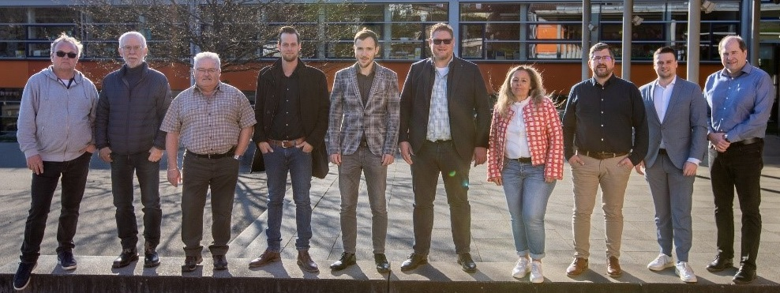
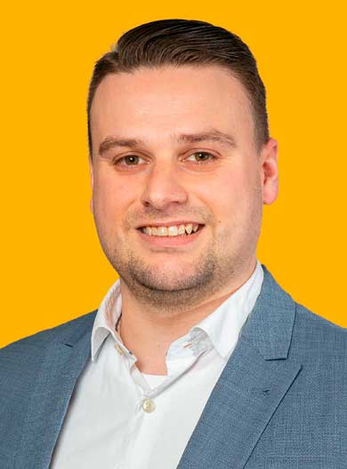
Mit meiner Kandidatur für den Hochdorfer Gemeinderat möchte ich mein aktuelles kommunalpolitische Engagement weiterführen und unter anderem die Projekte, die in der letzten Wahlperiode initiiert wurden, weiterverfolgen und begleiten sowie den frischen Wind in neue Projekte und aktuellen Themen weiter einbringen.
Meine besonderen Anliegen in der kommunalpolitischen Arbeit sind dabei: Das generationsübergreifende, dörfl iche Zusammenleben und die Gemeinschaft in der Gemeinde zu stärken. Ich möchte mich weiterhin für die Stärkung des Ehrenamtes und des Vereinslebens einsetzen. Ebenso sind mir die Bereiche Bildung, Schulentwicklung und auch die Kinderbetreuung ein wichtiges Anliegen. Auch sind mir Themen wie Umweltbewusstsein, Nachhaltigkeit sowie die Erlebbarmachung der Natur und entsprechendes Verantwortungsbewusstsein wichtig.
Motivation für die Tätigkeit im Gemeinderat nehme ich aus den vergangenen fünf Jahren, in denen ich als Mitglied der CDU-Gemeinderatsfraktion die Interessen der Bürgerinnen und Bürger vertreten durfte. Hierbei haben mich die Erfahrungen aus meiner Zeit als 1. Vorsitzender der Jungen Union Neckar-Fils und aus meiner Zeit als Beisitzer im Kreisvorstand der Jungen Union Esslingen sowie aus meinen anderen ehrenamtlichen Tätigkeiten motiviert.
Ich übernehme gerne Verantwortung und setze mich für meine Mitmenschen ein, deshalb bin ich in der Feuerwehr Hochdorf und dem Deutschen Roten Kreuz ehrenamtlich aktiv und dort in verschieden Ämter und Funktionen engagiert. Die Erfahrungen aus meinen ehrenamtlichen Tätigkeiten motivieren mich zusätzlich für die Tätigkeit im Hochdorfer Gemeinderat.
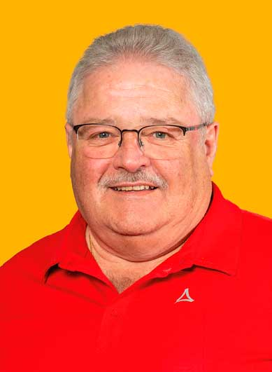
Ich bin in Hochdorf geboren und fühle mich, mit meiner zwischenzeitlich größer gewordenen Familie, nach wie vor sehr wohl. Da mir Hochdorf sehr wichtig ist, habe ich mich schon immer für unsere Gemeinschaft mit ehrenamtlichen Tätigkeiten engagiert und bin in mehreren Vereinen aktiv.
Um unser Hochdorf weiterzuentwickeln und für die Zukunft fi t zu machen, ist es heute mehr den ja wichtig mit soliden Finanzen vernünftige Investitionen zu tätigen. Leider werden von der großen Politik im mehr Aufgaben auf die Kommunen abgewälzt, das den fi nanziellen Spielraum von Hochdorf in den nächsten Jahren erheblich einschränkt. Es gibt deshalb sehr viele Aufgaben, die in guter Zusammenarbeit gemeinsam gelöst werden müssen.
Dafür möchte ich mich wieder mit meiner Erfahrung als Gemeinderat einsetzten.
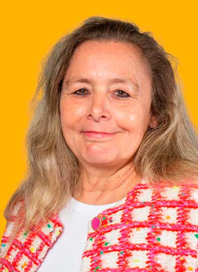
Meine persönlichen Erfahrungen aus Beruf, Ehrenamt und früherer Gemeinderatstätigkeit möchte ich zukünftig in die Arbeit des Hochdorfer Gemeinderats einbringen.
Die Interessen der Bürgerinnen und Bürger aller Altersgruppen zu vertreten ist mir wichtig sowie bisher Erreichtes zu bewahren und Anstehendes zeitgemäß weiterzuentwickeln.
Die aktuellen gesellschaftlichen Veränderungen gilt es im Blick zu behalten, um zukunftsorientierte und nachhaltige Entscheidungen zu treffen. Wichtige Punkte in der Gemeindepolitik sind für mich im Besonderen: dörfl iche Strukturen erhalten und stärken. guten Wohn- und Lebensraum für jüngere Generationen sowie für Ältere ebenso generationsübergreifende Projekte.
Auf Grund meiner persönlichen Erfahrungen als Schulleiterin liegen mir die Themen „Bildung“, „Schule“ sowie „Kinderbetreuung“ besonders am Herzen. Mit ist es als gebürtige Hochdorferin ein Anliegen, mich für meine Gemeinde einzusetzen und Verantwortung zu übernehmen.
Meine Erfahrungen aus Beruf, Familie, Ehrenamt und Freizeit bilden aus meiner Sicht eine gute Grundlage für eine zukunftsorientierte Gemeinderatsarbeit.
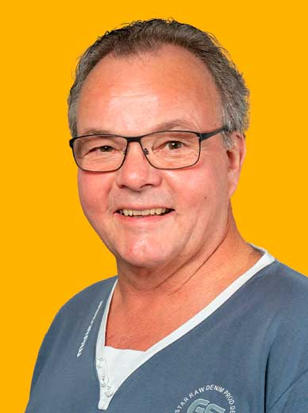
Mich – Frank Dietrich – hat es vor sieben Jahren nach Hochdorf verschlagen. Eine erfolgreiche berufl iche Laufbahn als Diplom-Ingenieur und Betriebswirt neigt sich dem Ende zu. So kann ich Erfahrung und Zeit in die Gemeindearbeit einbringen.
Besonderes Augenmerk möchte ich richten auf technische Themen im Rahmen der Beschaffung. Hier hilft mir meine jahrelange Erfahrung als Einkäufer in der Automobilindustrie und im Maschinen- und Anlagenbau.
Wichtig ist mir die Verbindung von Wirtschaftlichkeit der Ausgaben und deren Finanzierbarkeit. Mein Credo heißt: Nicht immer nur von anderen fordern, sondern sich auch selbst engagieren – zum Wohle von Hochdorf und seinen liebenswürdigen Menschen
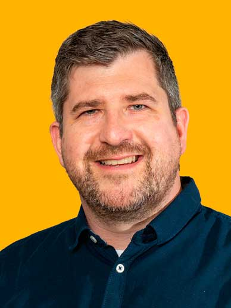
Hochdorf ist meine Heimat, mein Zuhause, hier fühle ich mich wohl. Aus diesen Gründen möchte ich mich für unser Hochdorf als Mitglied des Gemeinderats engagieren und einsetzen.
Als Familienvater ist es mir wichtig, dass unsere Kinder innerhalb der Gemeinde die Möglichkeit haben, sicher und geborgen aufwachsen zu können. Hierzu kann auch die Gemeinde einen wesentlichen Teil dazu beitragen. Zukunftsorientierte Angebote in der Kinderbetreuung sind dabei ebenso wichtig, wie öffentliche Spiel- und Freizeitangebote sowie die Förderung von Jugendarbeit unserer tollen Vereine.
Als Hochdorfer ist es mir aber auch wichtig, mich für unsere heutigen und auch zukünftigen Senioren einzusetzen. Denn diese haben dazu beigetragen, dass unser Hochdorf heute so lebens- und liebenswert ist.
Eine stabile Infrastruktur wie altersgerechtes Wohnen, eine gute Lebensmittelversorgung und eine gut ausgebaute ÖPNV-Anbindung sind wichtige Voraussetzungen. Um vernünftige und sinnvolle Projekte umsetzen zu können, bedarf es einer soliden, zielgerichteten Finanzplanung mit Augenmaß. Hierfür steht die CDU, hierfür stehe ich. Am 09. Juni sind Gemeinderatswahlen. Gestalten Sie mit, gehen Sie wählen.
Ich würde mich über Ihren Vertrauensvorschuss freuen. Geben Sie mir mit Ihrer Stimme die Möglichkeit, mich in den nächsten 5 Jahren für Sie – für unser Hochdorf einsetzen zu dürfen.
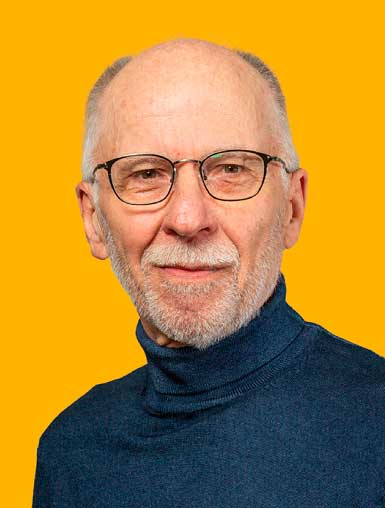
Liebe Hochdorferinnen und Hochdorfer,
ich bin Gustav Hanisch und lebe nach vielen Stationen in jungen Jahren seit nun 37 Jahren in Hochdorf. 26 Jahre habe ich davon mit meiner Familie auf dem Ziegelhof gewohnt. Bedingt durch meinen Lebensweg habe ich viele andere Gegenden kennengelernt.
Umso mehr schätz ich mein Leben in Hochdorf. Ich fühle mich hier so richtig angekommen und emotional verwurzelt. Man kann hier so richtig schön und ruhig wohnen. Besonders gefällt mir dabei auch einerseits die naturnahe Umgebung und andererseits die doch gute Verkehrsvernetzung.
Im Falle meiner Wahl würde ich mich gerne um die Belange und Sorgen einer jeden einzelnen Hochdorferin und eines jeden einzelnen Hochdorfers kümmern.
Mein besonderer Einsatz würde dabei der Verbesserung der örtlichen Struktur in Hinblick auf Einkaufsmöglichkeiten und Gastronomie gelten Aufgrund meiner früheren Berufstätigkeit habe ich eine Neigung zur Bearbeitung von komplexen Zusammenhängen und Aufgabenstellungen.
Im Falle meiner Wahl würde ich mich gerne um die Möglichkeiten der Umsetzung von Aufgabenstellungen aus dem OEK und der kommunalen Wärmeplanung kümmern.
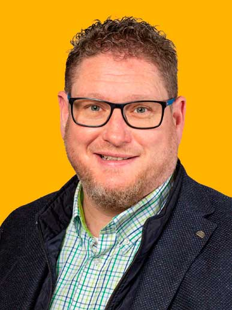
Als gebürtiger Hochdorfer liegt mir „onser Flecka“ sehr am Herzen. Neben meinen berufl ichen Erfahrungen möchte ich auch meine organisatorischen Fähigkeiten aus über 35 Jahren Vereinsleben mit einbringen. Diese sind generationenübergreifend und sehr wertvoll für mich.
Mein Engagement als Mitglied in einigen örtlichen Vereinen zeigt, was Ehrenamt für mich bedeutet und wie ich zu meinem Ort stehe. Höhepunkte daraus waren für mich sicher die langjährige Tätigkeit als Jugendleiter und die des Festwarts. Die Mitwirkung im Organisationsteam der AGHV an bisher zwei Dorffesten unterstreichen dies zusätzlich. Mir sind die Belange aller Bürgerinnen und Bürger wichtig. Die Transparenz der Gremienarbeit ist mir nach wie vor ein Anliegen. Sie verhindert Unmut und lässt wenig Platz für Spekulationen.
Als Vater von zwei Kindern muss man sich auch für die jüngsten Gemeindemitglieder interessieren und deren Interessen vertreten. Die Weichen für deren Zukunft müssen wir jetzt stellen, um gegenüber unseren Nachbargemeinden mitzugehen.
Gerne möchte ich mich weiterhin für Ihr Wohl im Gemeinderat engagieren und einsetzen. Packen wir es gemeinsam an.
Gehen Sie am 09. Juni 2024 zur Wahl und geben uns Ihre Stimmen.
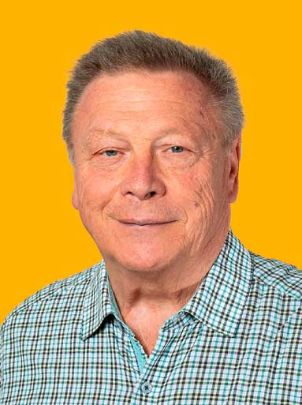
Als Mitglied in verschiedenen, örtlichen Vereinen und Vorstand der Wanderfreunde Hochdorfer Schnaken e.V. liegt mir, unter anderem, die Jugend- und Vereinsarbeit sehr am Herzen!
Ohne ehrenamtliches Engagement wären viele Aufgaben nicht oder nur mit erheblichem fi nanziellem Aufwand zu bewältigen, weshalb die Unterstützung und Förderung des Ehrenamtes in unserer Gesellschaft immer wichtiger wird.
Gerne würde ich meine langjährige Erfahrung im Gemeinderat zum Wohle der Gemeinde einbringen.
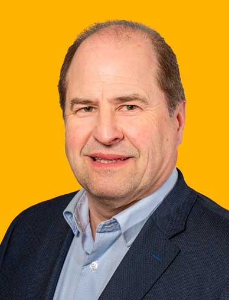
Als gebürtiger Hochdorfer fand ich sehr schnell den Weg in den Musikverein in dem ich mich seit Jahrzenten als Musiker, Jugendleiter und Vorsitzender einbringe und den Verein wie auch die Dorfgemeinschaft mit prägte. Das einhundertjährige Jubiläum des Vereines stellte dabei sicherlich ein herausragendes Ereignis im Ort dar. In der Funktion des Vizepräsidenten im Blasmusikverband Esslingen e.V. vertrete ich nun die Belange der Musikvereine im Kreis auf Landesebene. Nicht nur als Vater dreier Kinder ist mir die Entwicklung und Förderung unserer Jugend seit jeher sehr wichtig. Hier begleite ich für die IHK Stuttgart ehrenamtlich als Prüfungsausschuss Vorsitzender für Fachinformatiker seit Jahrzenten junge Menschen in die Arbeitswelt. Berufl ich sorge ich jeden Tag dafür, dass Tausende Mitarbeiter von der KiTa über Kantinen, ärztlichem Dienst und den Büroeinheiten eine funktionierende und beschwerdefreie Gebäudeinfrastruktur an ihren Arbeitsplätzen vorfinden. Ein besonderes Augenmerk habe ich dabei auf einen Effizienten und nachhaltigen Gebäudebetrieb und unterstütze dabei die Stadt Stuttgart bei ihren sehr ambitionierten CO2 Reduzierungszielen. Mit diesem Hintergrund ist es mir ein Anliegen meine Erfahrung und meine Kenntnisse im Sinne einer nachhaltigen und lebenswerten Ortsentwicklung vor dem Hintergrund der immensen Herausforderungen für Hochdorf einbringen zu können. Dabei spielt für mich neben der Stärkung der örtlichen Vereine und Gemeinschaft die Sicherstellung der Versorgung aller Generationen eine wichtige Rolle - damit auch unsere Jugend eine Zukunft im Ort und unserer Umwelt haben kann.
Ich freue mich darauf, meinen Beitrag zu einer positiven Entwicklung unseres Dorfes leisten zu können – ganz wichtig: gehen Sie am 09. Juni wählen und Danke für Ihre Stimme.
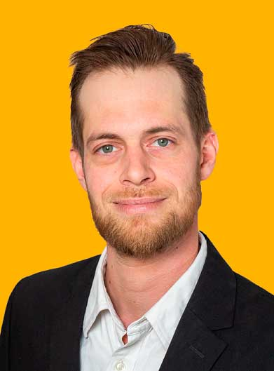
Liebe Mitbürgerinnen und Mitbürger, am 09. Juni 2024 haben Sie die wichtige Entscheidung, wer unsere Gemeinde in den kommenden Jahren vertreten wird. Ich möchte mich Ihnen als Kandidat für den Gemeinderat vorstellen: Mein Name ist Simon Niebauer, 35 Jahre alt, verheiratet. Als engagierter Bürger unserer Gemeinde liegt mir das Wohl unserer Gemeinschaft besonders am Herzen.
Als Verfechter einer nachhaltigen Entwicklung und einer verantwortungsvollen Haushaltspolitik setze ich mich für eine lebenswerte Zukunft für uns alle ein. Als Hochdorfer in der 3. Generation weiß ich um die Bedeutung einer familienfreundlichen Gemeinde. Ich setze mich dafür ein, dass Familien die Unterstützung und Infrastruktur erhalten, die sie benötigen, sei es durch den Ausbau von Betreuungseinrichtungen oder die Schaffung und Erhaltung von Freizeitmöglichkeiten für Jung und Alt.
Als Bewohner unseres wunderschönen Baden- Württembergs liegt es mir am Herzen, unsere Region zu stärken und weiterzuentwickeln. Ich möchte mich dafür einsetzen, dass unsere Gemeinde ihren Platz als lebenswerter und attraktiver Ort behält und dabei die Balance zwischen Tradition und Innovation findet.
Gemeinsam mit Ihnen möchte ich die Herausforderungen unserer Zeit meistern und unsere Gemeinde zu einem Ort machen, in dem sich alle Bürgerinnen und Bürger wohl und sicher fühlen. Ihre Anliegen und Ideen sind mir wichtig – ich stehe Ihnen als Ansprechpartner zur Verfügung und werde mich mit vollem Einsatz für unsere Gemeinschaft einsetzen.
Herzlichst, Simon Niebauer Kandidat für den Gemeinderat CDU-Fraktion
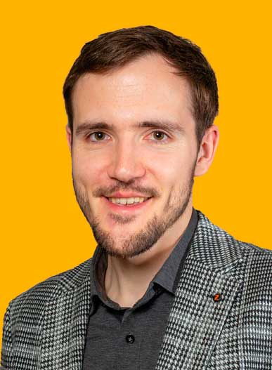
Die Aktivitäten, die in unserer Gemeinde stattfinden, bestimmen, wie gerne wir hier wohnen und leben. Die Entscheidung, welche Veränderungen in Hochdorf umgesetzt werden, liegt in den Händen des Gemeinderates.
Wie sich dieser zusammensetzt, bestimmen Sie mit. Wählen Sie die Fraktionen oder Personen, denen Sie diese Verantwortung zutrauen. In Hochdorf bin ich großgeworden und möchte es weiterhin sein.
Nicht nur körperlich, sondern auch durch das Engagement für unserer Gemeinde. Die Arbeit in den Vereinen und das Gefühl der Zusammengehörigkeit liegen mir dabei besonders am Herzen.
Im Musikverein mache ich gerne Musik und bilde den Nachwuchs am Instrument aus. Als Softwareingenieur beschäftige ich mich gerne mit technischen Herausforderungen. Diese Fähigkeiten und Erfahrungen helfen mir, Vorschläge zu machen und die bestmöglichen Entscheidungen zu treffen, die uns weiterbringen.